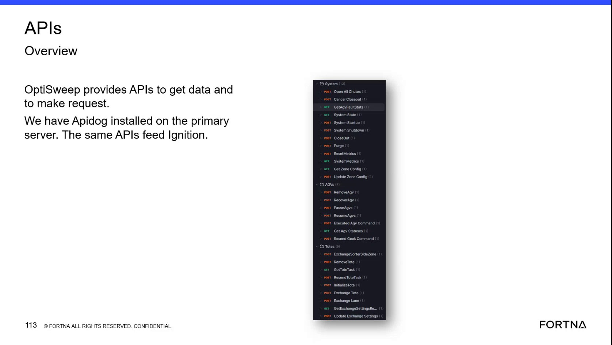
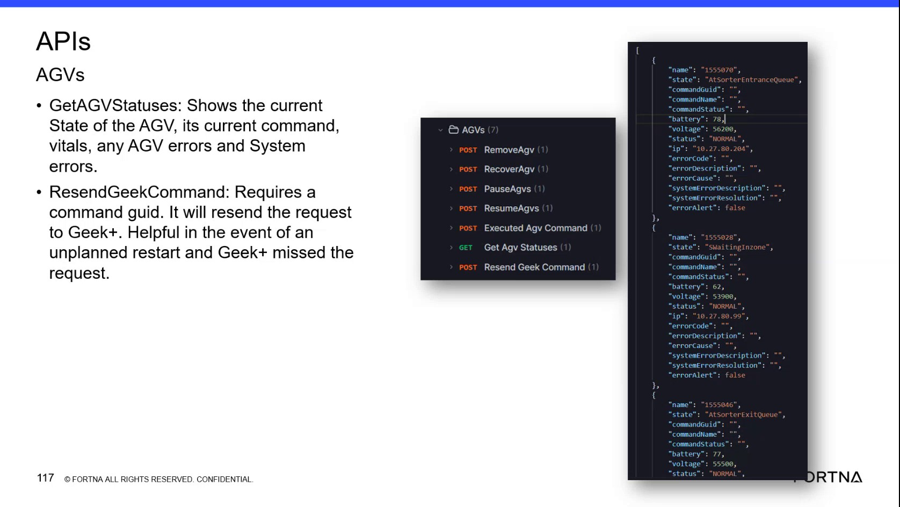

| Procedure ID | proc_check_agv_state_command_vitals_and_errors_in_the_optisweep_wcs_api_v1 |
|---|---|
| Title | Check AGV State, Command Vitals, and Errors in the OptiSweep WCS API |
| Procedure Type | diagnostic |
| Primary Role | L1_support |
| Support Safe | Yes |
| Capability Tags | agv_active_errors, robot_command_or_task_state |
| Access Surface | wcs_api, apidog |
| Audience Roles | L1_support, L2_support |
| Failure Pattern Tags | api_unresponsive |
| Validation Status | needs_sme_review |
| Merge Status | source_finalized |
Use the OptiSweep / WCS API through Apidog to inspect an AGV's live state, current command fields, vitals, network identity, AGV errors, system errors, and errorAlert indicator.
Use this Apidog / OptiSweep WCS API diagnostic when support needs to verify an AGV's live state, current command information, vitals, network identity, or AGV and system error indications.


Responsible role: L1_support
Instruction:
In the Apidog / WCS API client, open the AGVS area and select the request labeled "Get Agv Statuses".
Expected result:
The Get Agv Statuses request is open and can return an AGV status response.
Stop or Escalate If:
Responsible role: L1_support
Instruction:
In the Apidog / WCS API response, locate the affected AGV by its "name" and review its "state". Record the returned value exactly, including values such as "AtSorterEntranceQueue" or "SWaitingInzone".
Expected result:
The response identifies the AGV and provides its current state value.
Stop or Escalate If:
Responsible role: L1_support
Instruction:
In the Apidog / WCS API response for the identified AGV, review "commandGuid", "commandName", and "commandStatus". Record empty command fields as empty.
Expected result:
The response shows the available command GUID, command name, and command status values for the AGV.
Stop or Escalate If:
Responsible role: L1_support
Instruction:
In the Apidog / WCS API response, review "battery", "voltage", "status", and "ip" for the identified AGV. Record the displayed values without applying an unsupported battery or voltage threshold.
Expected result:
The response provides the AGV's displayed battery value, voltage value, status, and IP address.
Stop or Escalate If:
Responsible role: L1_support
Instruction:
In the Apidog / WCS API response, review "errorCode", "errorDescription", "errorCause", "systemErrorDescription", "systemErrorResolution", and "errorAlert". Treat populated error fields or "errorAlert": true as reported error indications. For active system errors, the related error information can include the error name, area, error code, last-seen time, system error description, and system error resolution.
Expected result:
The response shows the AGV and system error fields and indicates whether errorAlert is true or false.
Stop or Escalate If: